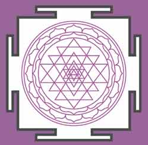

|
La palabra yantra se compone de la raíz yam y el sufijo tra, utilizado en sánscrito para designar instrumentos y herramientas. Por ejemplo, mantra es el instrumento para evocar mentalmente, normalmente la visión o la presencia interior de un dios.
Yam como verbo significa adquirir control sobre la energía inherente de alguna cosa o ser. Con lo cual, yantra es el instrumento que nos permite llevar a cabo esta acción.
En la tradición devocional se llama yantra tanto a los ídolos, cuadros o diagramas geométricos.
Los yantras pueden ser representaciones de la divinidad; modelos que sirven para el culto de un dios cercano al corazón después de que el iniciado haya pasado por la etapa de la devoción externa[1]; o mapas de la evolución gradual de una visión en tanto el Yo se identifica con la imagen y su contenido.
Los yantras, nos ayudan a concentrar nuestra fuerza psíquica para que nuestro poder de visualización reproduzca el “dibujo”. En resumen, sirven para visualizar, meditar y provocar experiencias internas muy íntimas.
Podemos llegar a identificarnos con el yantra de tal manera que no sepamos diferenciar si su posición se encuentra fuera o dentro de nosotros. Podemos alcanzar una visión estática de la divinidad o series de visiones en cadena. Este segundo fenómeno es más complejo.
Este tipo de visualización en cadena funciona en dos sentidos o movimientos. Primero hacia delante y luego hacia atrás para deshacer las visiones que se habían creado. Una especie de construcción y deconstrucción.
Consiste en una representación de las etapas de la manifestación del Absoluto en la evolución y posterior involución del mundo. Primeramente se daría la construcción mental del modelo y luego se iría disolviendo de manera gradual. Si se realiza con éxito, el estado mental que se alcanzaría sería aquel que corresponde a la superación de la diferenciación entre sujeto y objeto.
Requiere por tanto un gran esfuerzo mental, ya que hay que abarcar el desarrollo espacial y temporal para luego trascender dichas categorías.
Esta jerarquía temporal de grado del Absoluto en el plano del Maya- Sakti muestra al mismo tiempo la estructura del alma y el cuerpo humanos. El brahman es lo mismo que el Atman.
Los resultados no deben tomarse solo como reflejos de la esencia divina sino también como emanaciones de la mente del practicante devoto.
Cuando el yantra se utiliza en la práctica del yoga, el diagrama suele representar los diferentes estados de conciencia que conducen a la realización del Yo Universal.
El yantra por excelencia es el Sri-Yantra:

El Sri Yantra es el “yantra auspicioso”. Es un símbolo dinámico que sirve como soporte para la visualización concentrada y la experiencia interior del juego de la paradoja que rompe la lógica de la eternidad y el tiempo.
En la relación de sus trazos se encuentra representados los principios básicos de la metafísica oriental.
Los elementos que lo componen son: un marco cuadrado con cuatro puertas (sisitra, estremecido); una serie de círculos concéntricos y pétalos de loto; y una composición central de nueve triángulos intercalados.
La flor cósmica está alojada en el interior del “templo”[2]. Los triángulos entrecruzados representan a la pareja primordial. Cinco triángulos apuntan hacia dentro y cuatro hacia fuera. El triángulo que apunta hacia abajo representa a la yoni, sákti. El que mira hacia arriba es el linga y se llama “fuego”.
Los nueve triángulos representan la revelación del Absoluto mediante la polaridad graduada, según la actividad creadora de ambas energías.
Debemos comprender que el diagrama no es una representación del real Absoluto. Es algo imposible ya que está más allá del tiempo y el espacio. El Absoluto real debe ser visualizado por el practicante como una gota dentro del juego de los triángulos. Este Bindu es el punto de poder invisible del que emerge el diagrama entero. Uno de los triángulos interiores queda libre para unirse a este punto. Es la Sakti primordial, consorte del Siva trascendental, manifestación femenina del Brahman puro.
El Sri Yantra simboliza la Vida, universal e individual en cooperación.
[1] La devoción externa se practica a través de ídolos, ofrendas, fórmulas recitadas en voz alta…
[2] El “marco estremecido” representa el templo o santuario que sirve como sede a la divinidad. Debe considerarse el centro del corazón del devoto. Pues en él reside su divinidad elegida, su Yo eterno superior.
|
 RSS
RSS